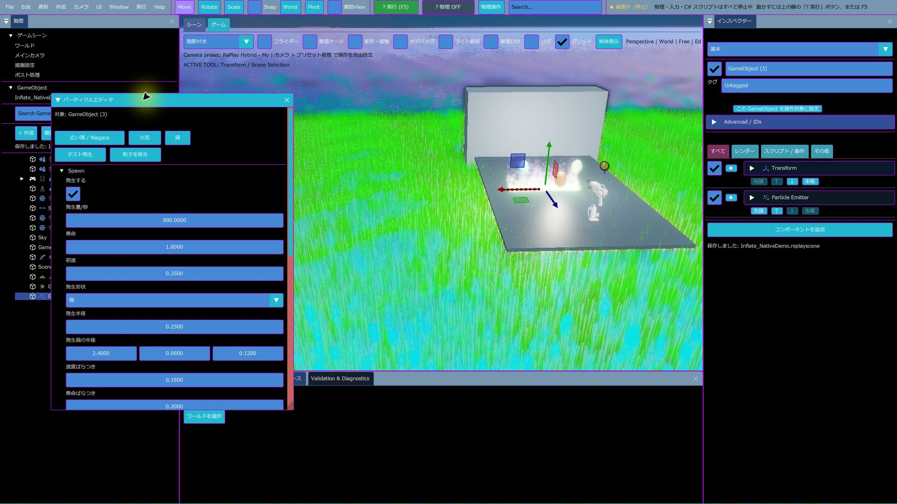
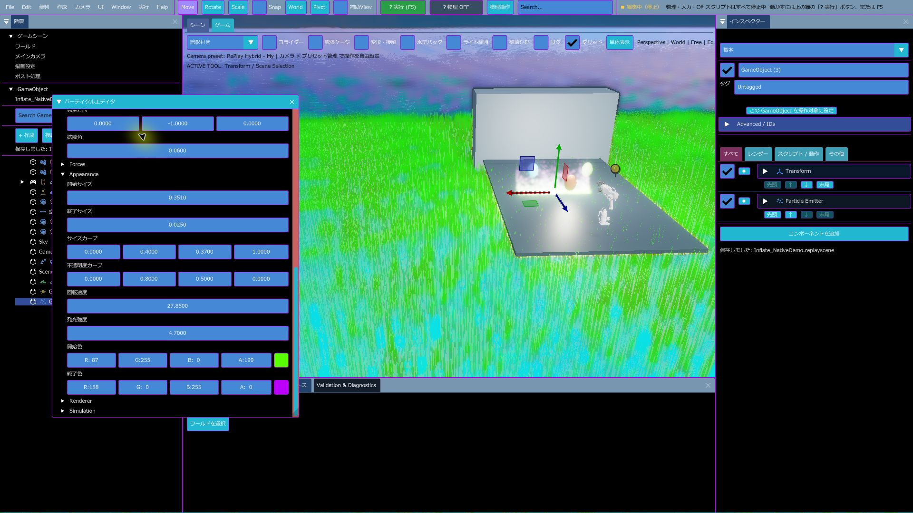
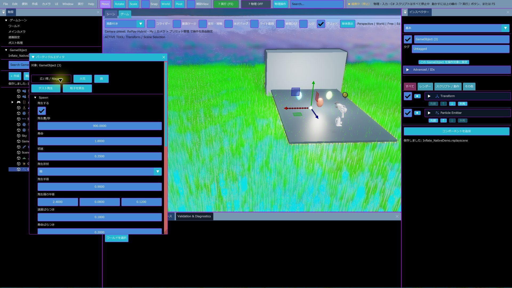
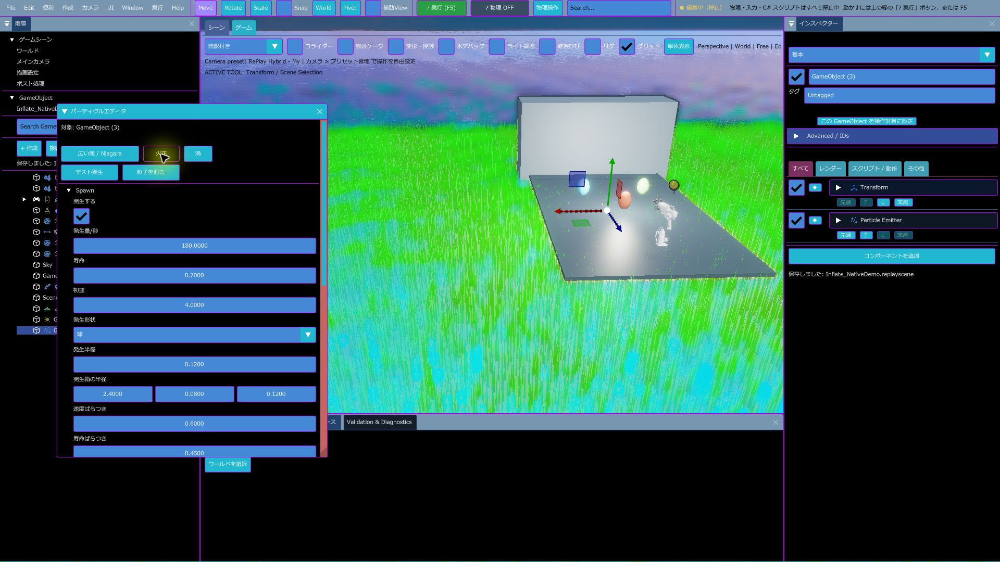
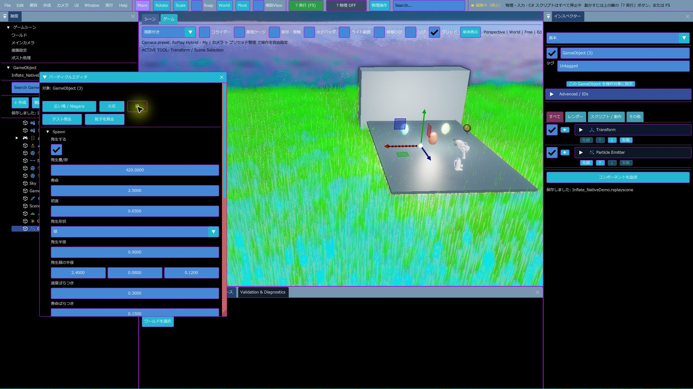
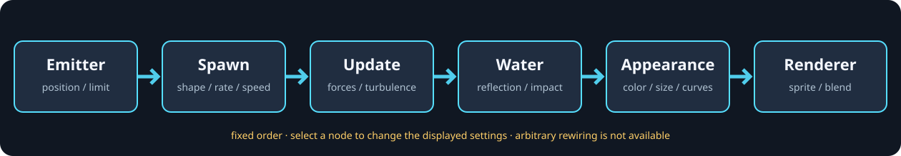

Particle Editor：基本・応用・ノード操作
選択中の GameObject に付いた Particle Emitter を、Scene View で見ながら調整するエディターです。Effekseer Emitter や Effect Stack とは別の仕組みなので、既存のエフェクトを置き換えず併用できます。
基本：初めての粒子を出す
- Hierarchy で Particle Emitter を付けたい GameObject を選びます。Scene View から選んでも構いません。
- Window > パーティクルエディタを開きます。
- Emitter がまだなければ Emitter を追加を押します。既に付いている場合は、その設定が表示されます。
- 広い滝 / Niagara、火花、渦のいずれかを選びます。設定はその場で変わり、Scene View に反映されます。
- テスト発生で一度だけ粒を出し、粒子を消去でプレビューを片付けます。

応用：モジュールを順に調整する
値を変えると選択中の Emitter に反映されます。まずプリセットを選び、見た目が近い状態から少しずつ調整すると作業しやすくなります。
| モジュール | 調整内容 | 使い方の目安 |
|---|---|---|
| Spawn | 発生の有効・無効、毎秒の数、寿命、初速、形状、半径・箱の大きさ、方向、拡散、ばらつき | 滝の幅は発生箱の横幅、粒の密度は発生量、流れる長さは寿命と初速から合わせます。 |
| Update / Forces | 重力、抵抗、風、乱流、渦 | 上向きの細流には負の重力、広がりには乱流、回り込みには渦を少量ずつ足します。 |
| Water | 水面との反射や着水イベント | WaterBody と併用する機能です。水面のない位置で効果が出ない場合は、水面側の配置と範囲を先に確認します。 |
| Appearance | 開始・終了サイズ、サイズカーブ、開始・終了色、不透明度カーブ、回転速度、発光 | 透明感は色のアルファと寿命末尾のアルファを調整します。大きさを寿命で変えると粒の消え方が滑らかになります。 |
| Renderer | スプライト画像や合成モード | 画像なしなら標準粒子で形を確認し、必要な場合にスプライトを追加します。 |
| Simulation | CPU / GPU シミュレーションや同時粒子数 | 多数の粒では GPU 駆動が向きます。対応する Water 連携など個別機能の条件も確認してください。 |

プリセット3種の使い分け
| 例 | 向く形 | 実機で確認した値の例 |
|---|---|---|
| 広い滝 / Niagara | 横に広い発生面から下向きに流す構成 | 発生量 900/s、寿命 1.8 秒、初速 0.35、箱幅 2.4、拡散角 0.06。 |
| 火花 | 短命で速い粒を球状に飛ばす構成 | 発生量 180/s、寿命 0.7 秒、初速 4.0、球半径 0.12。 |
| 渦 | 広めの球から出し、渦や乱流で回り込ませる構成 | 発生量 420/s、寿命 2.5 秒、初速 0.65、球半径 0.9。 |



ノード操作：できることと制限
ソースコードには、粒子の処理順を示す6つの固定ノードがあります。ノードを選ぶと対応する設定欄へ切り替える設計です。

- Emitterで位置・回転・上限を扱います。
- Spawnで形状・発生量・初速を調整します。
- Updateで力・乱流・渦を調整します。
- Waterで水面の反射・着水イベントを扱います。
- Appearanceで色・サイズ・カーブを整えます。
- Rendererで画像・合成を指定します。
実機での注意：今回操作した Release（更新日時 2026-10-09 21:48）の画面にはこのキャンバスが出ず、プリセットとモジュール設定までしか表示されませんでした。追加・削除・並べ替え・配線変更も、確認したソースにはありません。ノード図は実装コードに基づく説明で、ユーザー操作を撮影したものではありません。更新版での表示・クリック操作はまだ確認できていません。
保存と併用
- 値を変更したら、いつものシーン保存で .replayscene に保存します。プリセットは選択中 Emitter の設定値を書き換えます。
- 一度の効果に複数の形を重ねたい場合は、同じ GameObject に複数の Particle Emitter を付けて使います。
- 既存の Effekseer Emitter や Screen / Model / UI Effect Stack は別機能としてそのまま併用できます。
記録方法
画像は computer-use の対象ウィンドウ直接キャプチャで取得しました。Snipping Tool の選択範囲操作は使っていません。この環境では継続録画の機能が使えなかったため、動画として偽装せず、各プリセットの実機画像で記録しています。